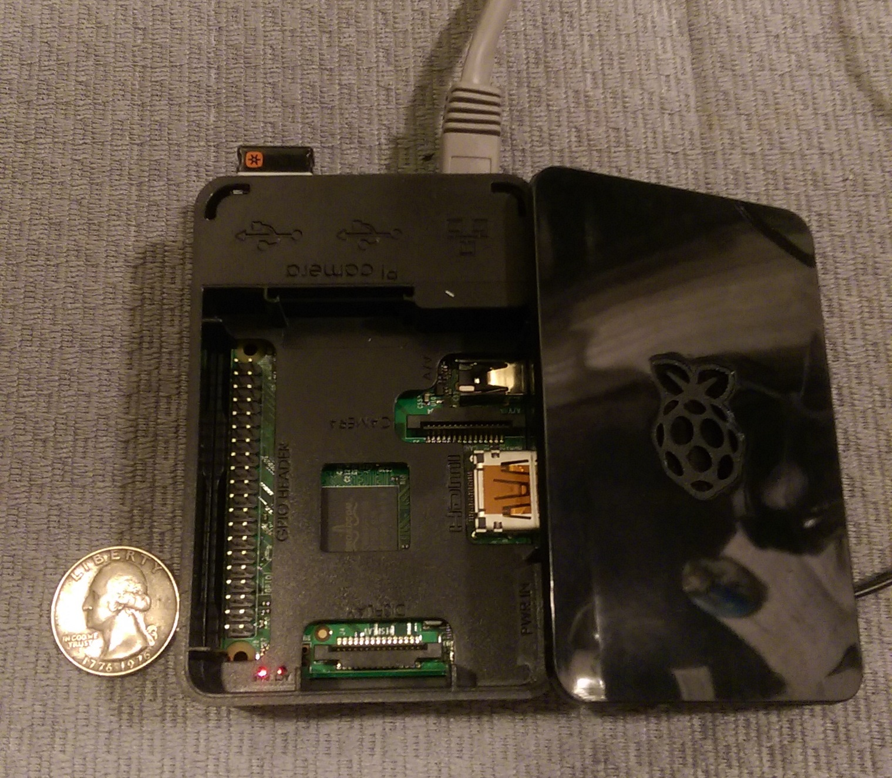

<div class="row">
    <div class="col-sm-12">
        <div class="container">
            <div class="panel panel-default project-panel curve-borders">
                <div class="panel-heading curve-top-border">
                    <div class="row">
                        <div class="col-sm-6">
                            <h1 class="panel-title">Raspberry Pi Home Webserver</h1>
                        </div>
                        <div class="col-sm-6"><span class="pull-right">Summer 2015</span></div>
                    </div>
                </div>
                <div class="panel-body">
                    <div class="row">
                        <div class="col-sm-4">
                            <p>In the summer of 2014, I had ideas for web projects but nowhere to host them.</p>
                            <p>The solution? Buy a Raspberry Pi Minicomputer and make it a home webserver.</p>
                            <p>Using the Raspbian OS, I initially setup the Pi to act as a local server using traditional LAMP stack technologies.</p>
                            <p>I have since used this server to host TylerSouthmayd.com publicly, as well as some non-public work with MEAN stack technologies.</p>
                        </div>
                        <div class="col-sm-6 col-sm-offset-2">
                            
                        </div>
                    </div>
                </div>
            </div>
        </div>
    </div>
</div>